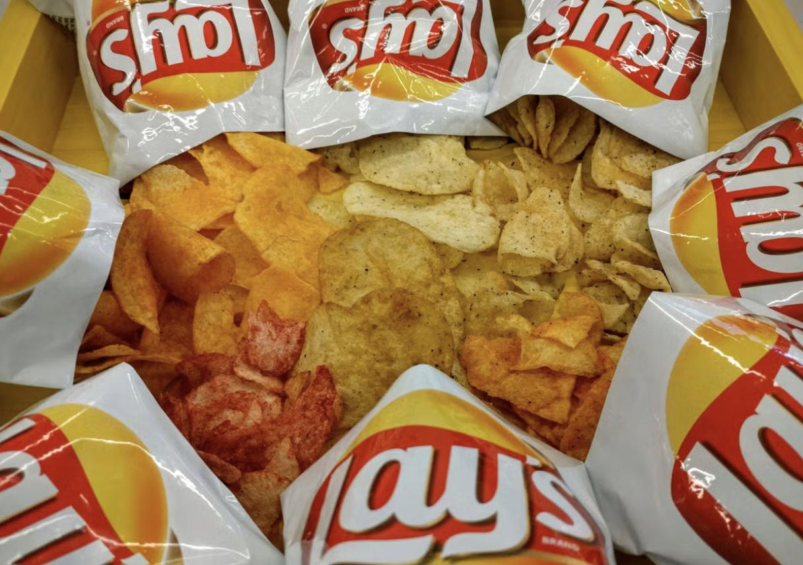

Crisps, or potato chips, are one of the world's most beloved snacks. Whether you're watching a movie, hanging out with friends, celebrating holidays, or simply indulging in a guilty pleasure — crisps are there to make life more fun and flavorful. From spicy to sour cream, classic salted to wild wasabi, they're a universal treat that adapts to taste buds across cultures. Let's celebrate what unites us all — the joy of the crunch!
The Ultimate Crisp Experience
Fun Facts About Crisps!
- 🥔 The very first potato chip was made in 1853 by George Crum.
- 🌍 Lay's chips are sold under different names worldwide, like Walkers in the UK and Sabritas in Mexico.
- 📦 The biggest bag of chips ever made weighed over 2,500 pounds!
- 🧂 The first-ever flavored crisps were **cheese & onion**, introduced in the 1950s.
- 🍠 Pringles are **not technically potato chips** – they're made from dehydrated potato flakes.
🗣️ Share Your Crisp Love! 🗣️
What's your favorite chip flavor? Any memorable moments involving crisps? Let the community know below!